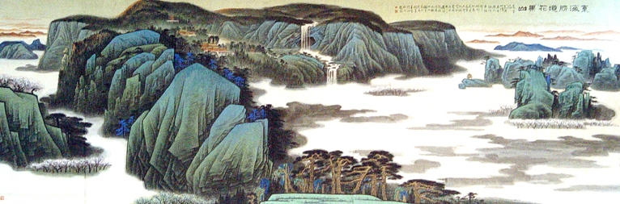

连云港花果山景区位于江苏省连云港市境南云台山中麓，江苏省的东北部，东临黄海，西接中原，北扼齐鲁，南达江淮，与日本及朝鲜半岛隔海相望，北纬34.6310度，东经119.1229度附近，其中花果山玉女峰是江苏省最高峰，海拔624.4米，峭壁悬崖。
花果山风景区是国家重点风景名胜区、国家AAAAA级旅游区、国家地质公园、全国文明风景旅游区示范点、全国文明风景旅游区创建先进单位、全国青年文明号、全国重点风景名胜区综合整治先进单位,中国十佳旅游景区、中国最值得外国人去的50个地方金奖、全国“黄金周”旅游直报点和全国空气质量预报系统点。
花果山风景区所在的连云港市位于我国万里海疆的中部，江苏省的东北部，东临黄海，西接中原，北扼齐鲁，南达江淮，与日本及朝鲜半岛隔海相望。景区面积75.39平方公里，层峦叠嶂136峰，其中花果山玉女峰是江苏省最高峰，海拔624.4米，峭壁悬崖，巍峨壮观。
 花果山以古典名著《西游记》所描述的“孙大圣老家”而著称于世，因美猴王的神话故事而家喻户晓，名闻海内外。自古就有“东海第一胜境”和“海内四大灵山之一”美誉的花果山，集山石、海景、古迹、神话于一身,具有很高的观赏、游览和历史科学研究价值，它丰富的人文景观和秀美的自然景观令游人赞叹不已。自然景观呈现山海相依、崎峭与开阔呼应对比的壮丽景色。山里古树参天、水流潺潺、花果飘香、猕猴嬉闹、奇峰异洞、怪石云海、景色神奇秀丽。野生植物资源十分丰富、计有植物种类1700余种，其中药物资源就有1190种，金镶玉竹、古银杏等都是省内罕见、国内少有的树种和古树名木，是江苏省重要的野生植物资源库，每年吸引了国内许多高校、科研单位、专家学者来此考察研究。“一部西游未出此山半步，三藏东传并非小说所言”。与《西游记》故事相关联的孙悟空降生地的娲遗石，栖身之水帘洞，以及七十二洞、唐僧崖、猪八戒石、沙僧石等等，神形惟妙惟肖、栩栩如生。
花果山的人文景观源远流长，文化底蕴十分厚重，千百年来的古建筑、古遗址、古石刻、以及历代文人墨客的游踪手迹遍步山中。唐、宋、元、明、清先后在这里筑庙建塔、成为香火旺盛的佛教胜地，海内四大灵山之一，早在明万历30年，朱翊钧皇帝已颁旨花果山中的主庙宇三元宫为天下名山寺院。康熙皇帝亲题“遥镇洪流”四字镌刻在花果山主峰玉女峰上，以表对花果山神灵的敬仰。毛泽东主席生前对《西游记》很有研究，他特别关注《西游记》中孙悟空的老家花果山，现花果山上镌刻的“孙猴子的老家在新海连市（现连云港市）云台山”被称为“毛公碑”。
花果山景观特色鲜明，它具有迷离神奇的色彩。《西游记》里描述的花果山美猴王水帘洞以及神话中女娲补天遗留下来的娲遗石等种种神话和民间传说，把自然景观与人文景观融为一体，相得益彰，形成了独特的景观风貌，具有很强的感染力，让人遐想。
游览花果山四季皆宜，春来鸟语花香、夏日飞瀑急湍、秋季风景如画、冬日银装素裹。晴游花果山，登山远望、日出海上、大海茫茫、风帆点点、身临其境、使人顿觉“恍疑身世出尘寰”；雨登花果山、云山雾海、如入画图，如临仙境。浓郁的自然风光与灿烂的历史文化，奇异的山水特色与多彩的神话传说，加上古典名著《西游记》的精彩描绘，使花果山充满了神奇的魅力。